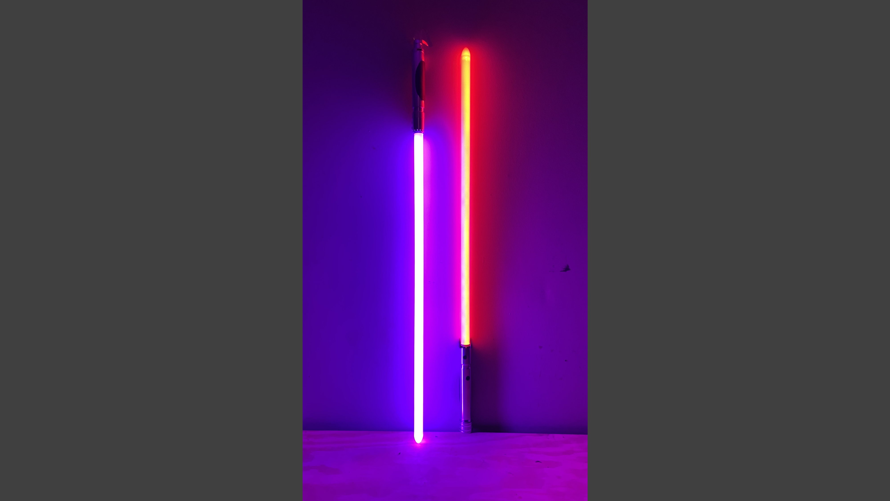
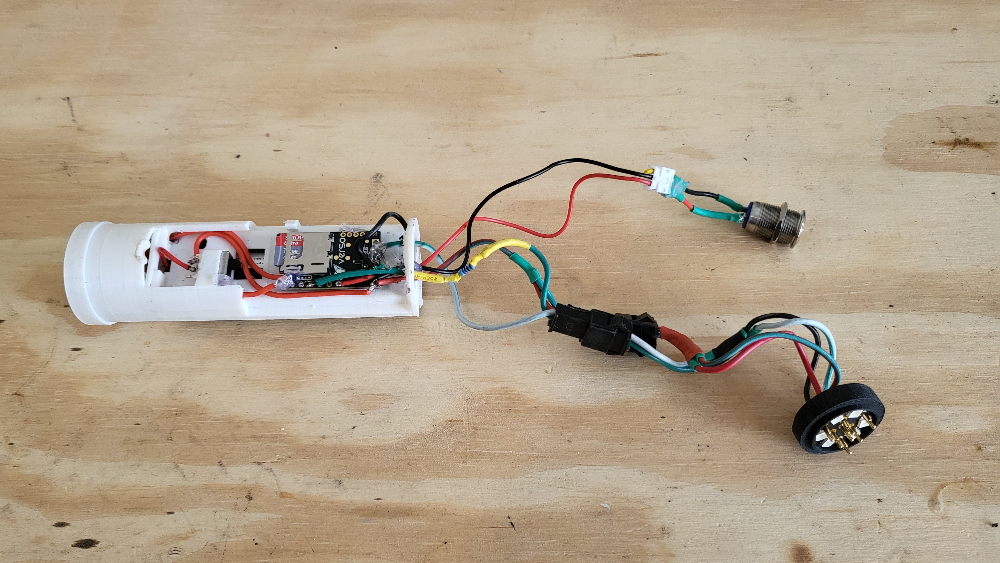
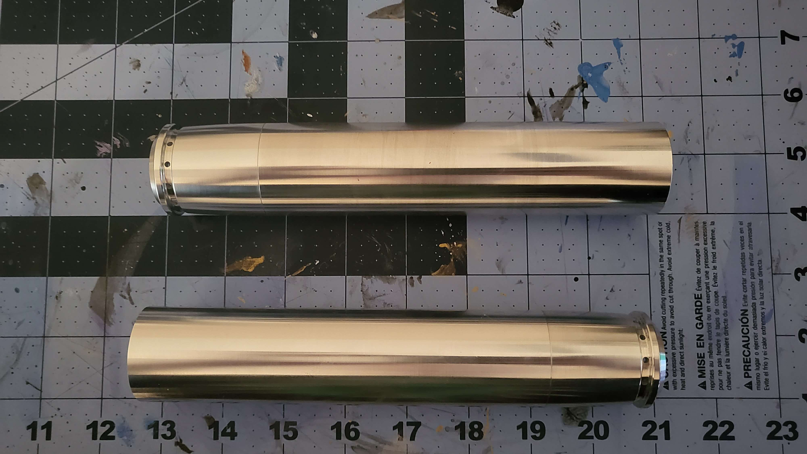
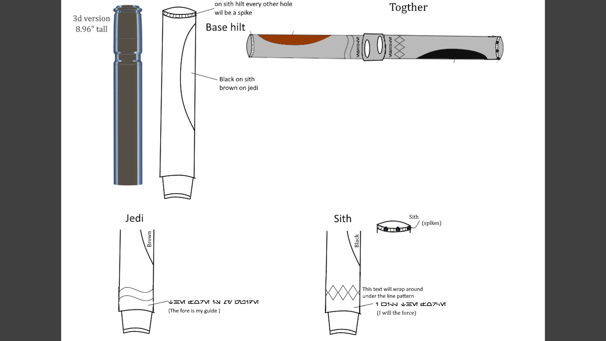
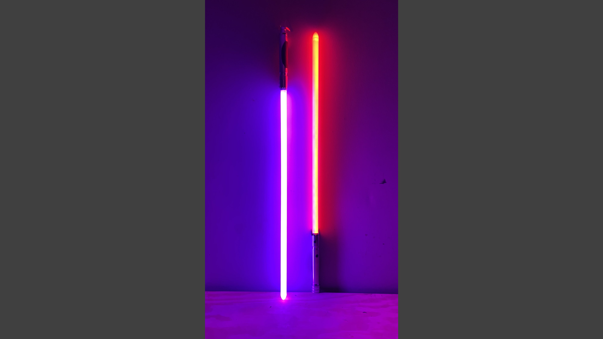
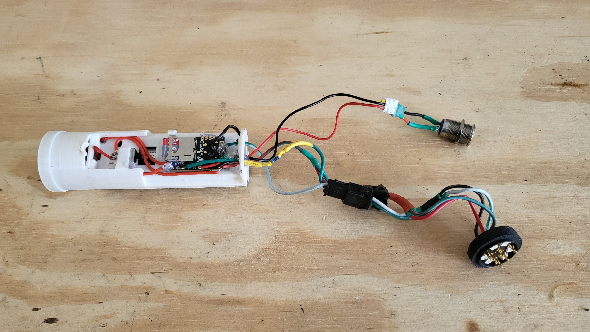
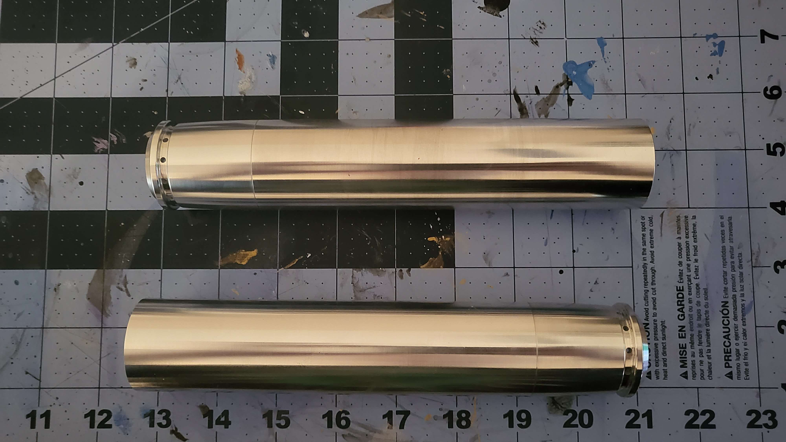
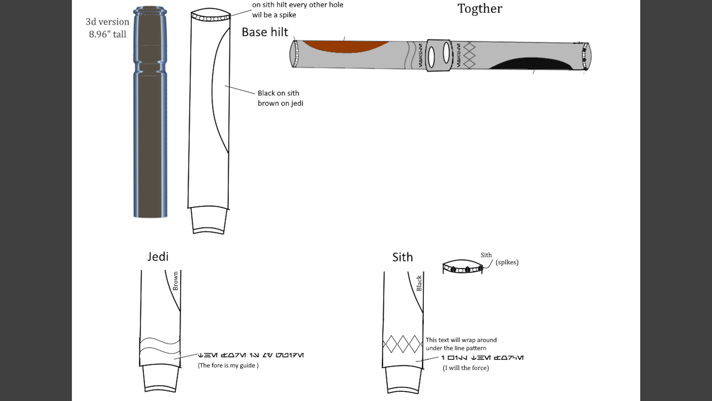

This build is a lightsaber that splits, similar to Cal Kestis’ saber.
I used parts from the custom saber shop and UltraSabers to build the hilt.
The internals of the sabers are two Verso sound boards (one for each end) and two 18650 battery cells powering them.
In length, the sabers is symmetrical but not in design.
There are two sides to this saber: a light and a dark side.
The light side of the saber sports a brown leather grip and produces an unstable purple blade.
Meanwhile, the dark side of the saber sports a black leather grip and spikes along the blade emitter; it also produces a clean red blade.
I attached the leather grips using some five-minute epoxy. The spikes on the Sith side of the saber are 3D printed (as is the internal chassis). Originally,
I used some metal spike gauges I found off of Amazon,
but they continued to fall off, so I swapped them out for a lighter material.
The story I have put behind this build is that the user of these lightsabers is an ex-Jedi who became angry with the Jedi Order sometime before the Clone Wars.
This was because the Council had become too involved in politics during that time instead of helping those in need.
With their lust for change consuming them, it led this Jedi down a dark path, leading them to discover the dark side and all the powers it promises.
After being seduced to the dark side by a Sith, the ex-Jedi attempted to bleed their purple kyber crystal. However,
because of the good that still remained in this Force user, they were unable to put enough hate into the crystal,
cracking it instead. Realizing their mistake, they killed the Sith that seduced them, taking their saber for their own.
While the ex-Jedi never returned to the Jedi Order, they also did not fully commit themselves to the dark side.
This Force user now travels the galaxy, helping those in need using all the powers that the Force provides.
Overall, I'm quite pleased with the outcome of these, even though I went massively over budget with them.
Igniting the sabers and swinging them around is just as exhilarating as you'd imagine (if not more).
I'm thrilled to finally own a NeoPixel saber. Crafting lightsabers is what initially sparked my passion for
prop-making, so I'm particularly glad to return to my roots and enhance upon my initial prop endeavor.
 






